RICOH THETA V Wireless Live Streaming Guide
There are two parts to this guide:
- Configuring THETA V prior to streaming event
- Using THETA V to broadcast a streaming event
Quickstart Summary
Configuration Summary
- Locate Wireless Live Streaming Plug-in in the THETA Store
- Connect THETA V to computer with USB cable
- Install Plug-in into THETA V using THETA Desktop Application
- Set Wireless Live Streaming plug-in to launch
- Reboot camera
- Configure THETA V to connect to Internet using a Wi-Fi router or mobile phone hotspot
- Configure YouTube Live 360° Event with web browser
- Put THETA V into Plug-in mode
- Save YouTube Live Events server URL and stream key into THETA V
Usage Summary
- Connect THETA V to Wi-Fi router or mobile phone hotspot
- Start broadcast
- Optional: verify broadcast is working properly
Step-by-Step Configuration Guide
Locate Plug-in in THETA Store
Go to https://pluginstore.theta360.com/
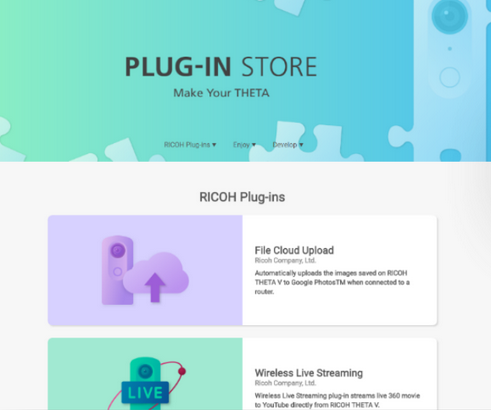
Find the Wireless Live Streaming plug-in.
Connect your THETA V to your computer
Connect the camera to your computer with a USB cable.
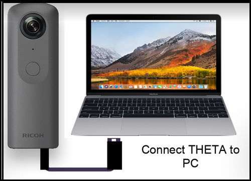
You must have the Ricoh Desktop Application installed on your computer. If you do not have the desktop application installed, download it from https://theta360.com/en/support/download/
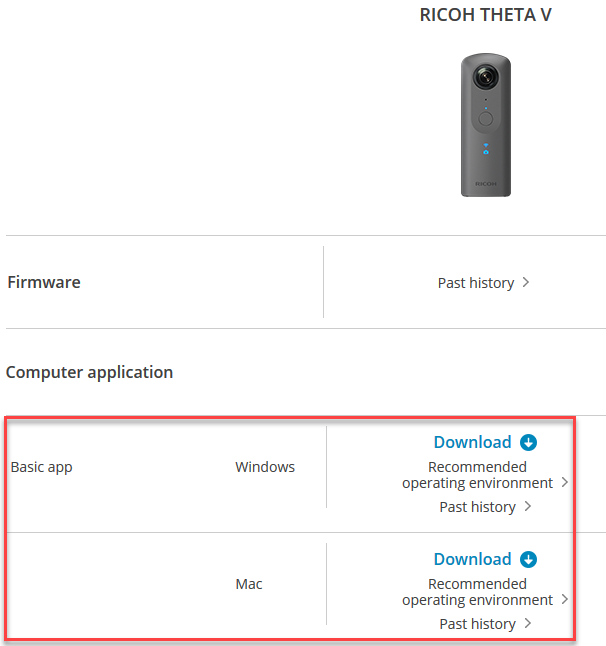
Install
Click on the Install button.
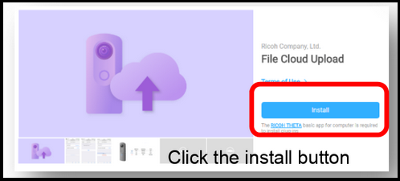
Set Wireless Live Streaming Plug-in to Launch
With your camera and the computer still connected with a USB cable, set the active Plug-in with the Desktop App. Under the file menu, select Plug-in management....
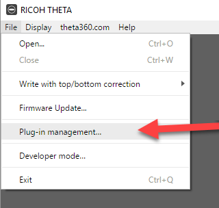
Check the radio button for Wireless Live Streaming.
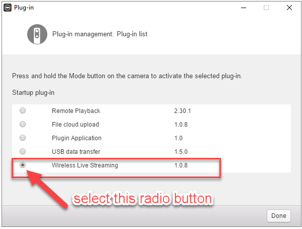
Reboot camera
To be safe, reboot the camera. A reboot may not be needed in some cases, but if you have time, hold the power key down for 8 seconds. Once the camera has turned off, press the power button again.
Be careful not to do a short press of the power button, which places the camera into sleep mode and will not reboot the camera.
Configure THETA V to Connect to Internet
The objective of this step is to configure your THETA V to connect to the Internet using Client Mode Wi-Fi. In Client Mode, the Wi-Fi LED on the front of the camera is solid green.
If you have already configured your camera with Client Mode, you can skip this step.
Continue on if you do not have a green LED as shown in the picture below.
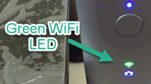
There is a more detailed guide for Client Mode configure here.
Most routers have a mode called, "WPS", which stands for Wi-Fi Protected Setup. This will enable you to connect your THETA V directly to your router with a few button presses.
WPS Setup
Hold your THETA V and press the Wi-Fi, Mode, and Shutter buttons down.
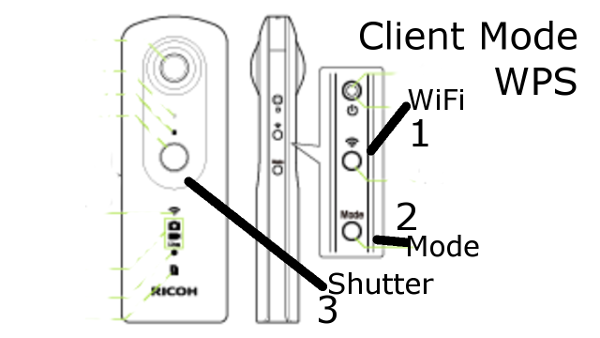
On your Wi-Fi router, press the WPS button, usually on the back of the router.
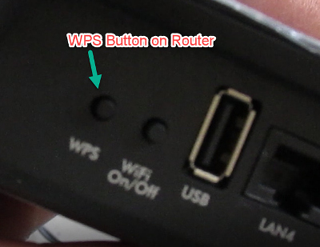
The THETA V should now be configured for Client Mode. In the future, you can place the THETA V into Client Mode by pressing the Wi-Fi button on the side of the camera.
Find IP Address
You will need the IP address of your camera to save the YouTube settings to your camera. The easiset way to get the IP address of your THETA V is to use the Ricoh mobile application. For this step, you need to connect your mobile phone to the camera with Client Mode (green LED).
From the screen where you can see your camera images, go to the Settings gear in the upper right corner. Go to Camera Settings -> Camera versions -> IP Address.
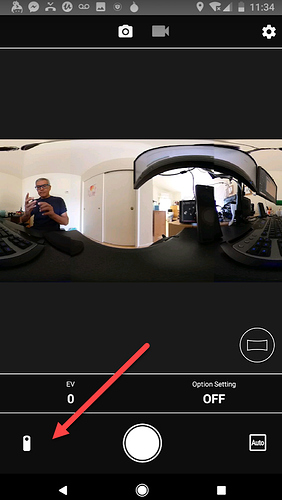
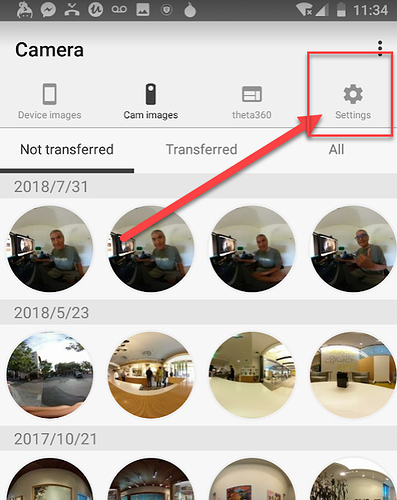
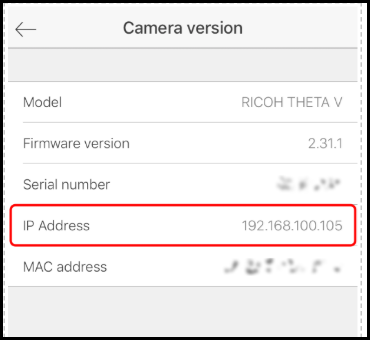
If you can't connect your mobile app to your camera with client mode, there is a separate article shows a number of other ways to get the IP address of your camera.
Manual Setup
If you do not have access to WPS on your router or you are connecting the camera to your mobile hotspot, please look at this configuration guide for information on manual configuration.
Configure YouTube Live Event
With any web browser, configure YouTube Live Event. You must be logged into the YouTube account that you plan to use for live streaming.
Go to YouTube Creator Studio.
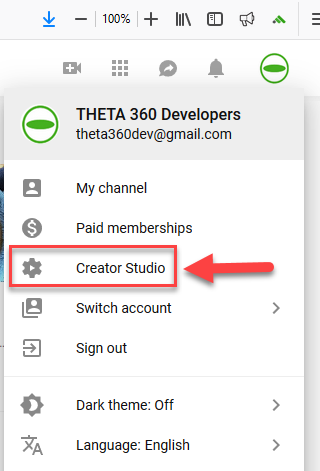
In the left-hand pane, select LIVE STREAMING -> Events.
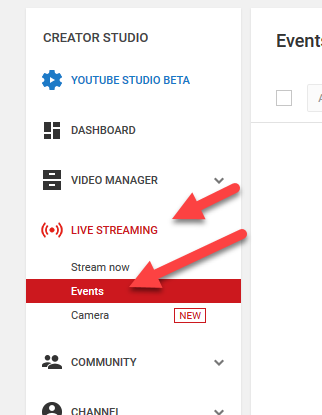
With the pane for Live Event selected, click on the button for New live event that is located in the upper right of your window.
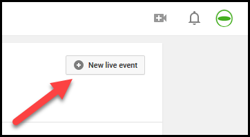
Click on the Advanced settings tab.
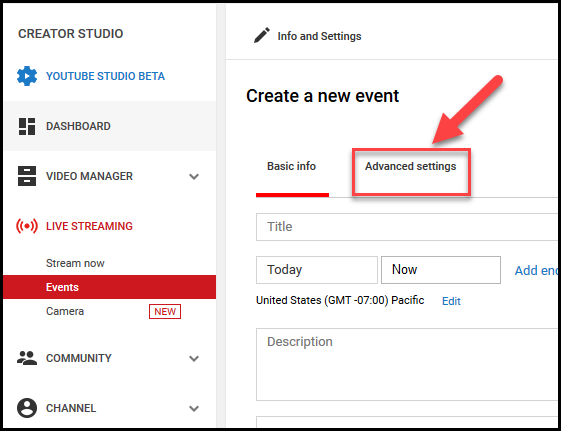
Check the box for This live stream is 360°.

Select Reusable stream key.
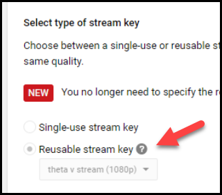
Create a new stream.
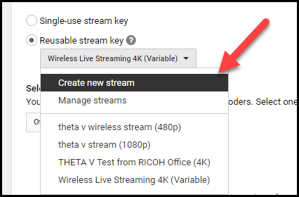
You will need the Stream Name and the Primary Server URL for the next step.
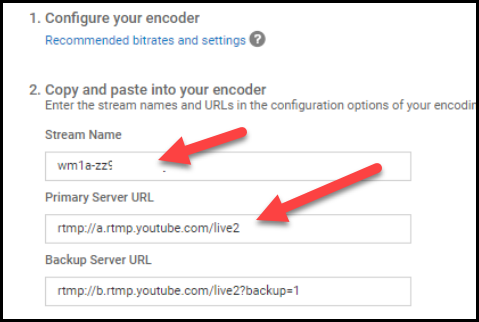
Put THETA V into Plug-in Mode
Press the lower mode button on the side for longer than two seconds.
The LED above the shutter button should be solid white.
The Wi-Fi LED should be solid green.
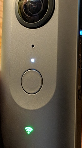
Save YouTube Settings to Camera
You need to use a web browser to connect to the camera at:
http://your-camera-ip:8888
For example, my camera was assigned an IP address of 192.168.2.100.
I can access my camera's configuration at:
http://192.168.2.100:8888

Copy and paste the YouTube server and stream key into the boxes on the camera configuration tool.
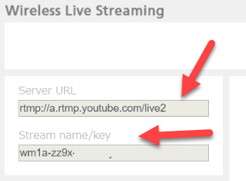
Congratulations! You've finished the configuration of the Wireless Live Streaming plug-in.
To start the stream, press the shutter button of the camera.
Testing
Camera Configuration Tool
In the camera configuration tool, you will see a red dot with the words, Streaming, next to it.
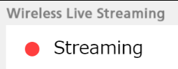
You will also see a button that says, Stop streaming.
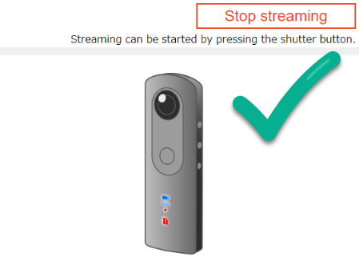
YouTube Control Room
Preview.
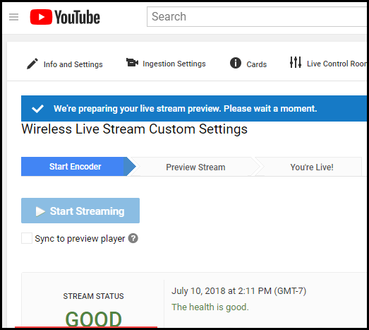
With the event live.
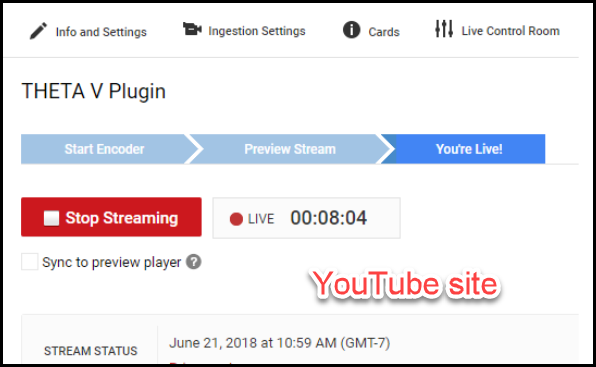
View from YouTube.
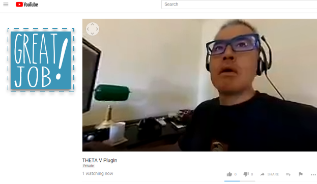
View from other browsers on Internet.
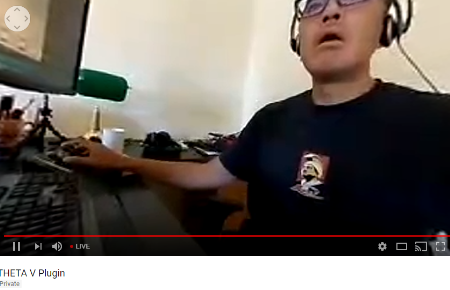